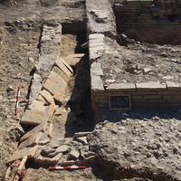
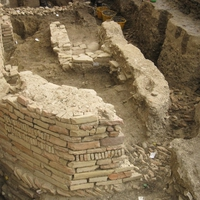
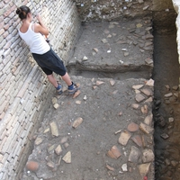
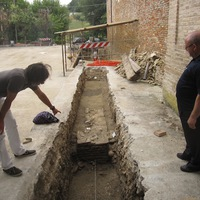
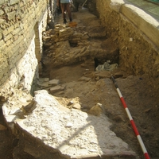
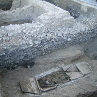

Il sito
La valle del Cesano
La chiesa
La contrada
Scavi e restauri
Pubblicazioni
Il museo
Foto
Contatti
News
Campagna di scavi e ricerche 2016
leggi tutto....
Campagna di scavi e ricerche 2015

leggi tutto....
Campagna di scavi e ricerche 2014
leggi tutto....
Campagna di scavi e ricerche 2010

leggi tutto....
Campagna di scavi e ricerche 2009

leggi tutto....
Campagna di scavi e ricerche 2011

leggi tutto....
Campagna di scavi e ricerche 2008

leggi tutto....
Restauri
leggi tutto....
Campagna di scavi e ricerche 2007

leggi tutto....
Campagna di scavi e ricerche 2006
leggi tutto....
Campagna di scavi e ricerche 2005
leggi tutto....
Campagna di scavi e ricerche 2004
leggi tutto....
Campagna di scavi e ricerche 2003
leggi tutto....
Campagna di scavi e ricerche 2002
leggi tutto....
Campagna di scavi e ricerche 2001
leggi tutto....